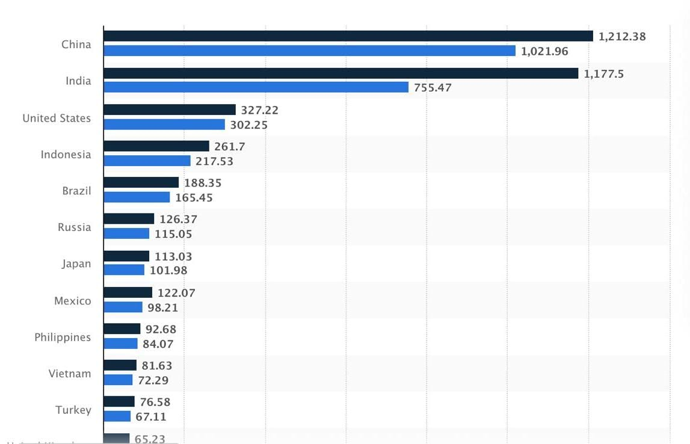

Asfiya Madani
B.TECH – Artificial Intelligence & Data Science
This paper discusses the influence of social media on youth. It explains both the positive and negative effects of social media on students,including education,communication,mental health, and behavior. The paper also highlights ways to use social media responsibly.
What is Social Media?
social media is a collection of websites and apps (like Facebook, Instagram, TikTok) that let people create, share, and interact with content (posts, photos, videos) in online communities, allowing them to connect with friends, family, and the world easily.
Why Youth Use Social Media?
Young people use social media to stay connected with friends and communities, express who they are through creativity and personal identity, and enjoy entertainment like videos and trending content. It also serves as a space for learning—keeping up with news, gaining knowledge, and exploring new ideas. youth are drawn to social media because it meets important developmental needs such as feeling accepted, discovering their identity, and reducing feelings of loneliness.
Types Of Social Media:
Social Networking sites
Social networking sites are online platforms that allow users to create profiles, connect with friends, and share posts, photos, and updates.
Examples:
Messaging Applications
Messaging applications are software programs that enable users to send instant messages, make voice or video calls, and share media in real time.
Examples:
Video Sharing Platforms
Video sharing platforms allow users to upload, watch, like, comment on, and share videos with others across the internet.
Examples:
Online Discussion Forums
Online discussion forums are platforms where users can ask questions, share opinions, and participate in topic-based discussions.
Examples:
Social Media Statistics Worldwide:

Bar chart comparing the number of social media users across different countries.
China has the highest number of social media users in the world, with user numbers exceeding 1 billion, showing its massive online population.
India ranks second, with a very large and rapidly growing number of social media users, highlighting the increasing internet penetration among youth.
The United States stands third, with over 300 million users, indicating widespread adoption across age groups.
Countries like Indonesia, Brazil, Russia, and Japan also show strong social media usage, though on a smaller scale compared to China and India.
Emerging countries such as Philippines, Vietnam, and Turkey show steady growth, reflecting increasing smartphone and internet access.
Positive Impacts Of Social Media On Youth:
Social media has become an integral part of modern society, especially for youth. It plays a significant role in shaping the thoughts, behavior, and lifestyle of young people. When used in a responsible and balanced manner, social media offers many positive benefits that contribute to the educational, social, and personal development of youth.
> Improved Communication and Connectivity:
One of the most important benefits of social media is improved communication. Social media platforms allow youth to stay connected with friends, family members, teachers, and peers regardless of geographical distance. Messaging applications and social networking sites provide instant communication, which helps in maintaining relationships and sharing ideas easily. This connectivity also helps students collaborate on academic work, group discussions, and projects.
> Easy Access to Educational Resources:
Social media encourages creativity and self-expression among youth. Young people use platforms to share their thoughts, artwork, music, writing, photography, and videos. This helps them discover their talents and build confidence. Creative expression through social media can also lead to recognition and motivation, inspiring youth to improve their skills further
> Social Support and Community Building:
Social media provides emotional and social support to youth by connecting them with people who share similar interests, experiences, or challenges. Online communities and support groups help young people feel less isolated and more understood. This sense of belonging can positively impact mental well-being when social media is used positively.
> Career Opportunities and Skill Development:
Social media also helps youth explore career opportunities and develop professional skills. Platforms allow students to learn new skills, follow professionals, and stay informed about internships, job opportunities, and career guidance. Youth can showcase their achievements, projects, and talents, which helps in building a strong personal or professional profile.
Negative Impacts Of Social Media
While social media has many advantages, excessive and improper use can have several negative effects on youth. These impacts can influence their mental health, academic performance, physical well-being, and social behavior.
>Addiction and Time Waste:
One of the major negative impacts of social media is addiction. Many young people spend long hours scrolling through posts, watching videos, or chatting online. This excessive usage leads to poor time management and distraction from important activities such as studying, sleeping, and family interaction. Social media addiction can reduce concentration levels and negatively affect academic performance.
>Mental Health Issues:
Excessive use of social media can lead to mental health problems among youth. Constant comparison with others, pressure to look perfect, and the need for likes and comments may cause stress, anxiety, and low self-esteem. Exposure to negative content can also lead to depression and emotional instability. Youth may start feeling lonely even though they are constantly connected online.
>Cyber Bullying:
Cyber bullying is a serious issue associated with social media. It includes online harassment, trolling, spreading rumors, and posting harmful comments. Many young people face emotional trauma due to cyber bullying, which can affect their confidence and mental peace. In severe cases, it may lead to social withdrawal and psychological distress.
>Reduced Physical Activity:
Spending too much time on social media reduces physical movement and outdoor activities. Youth often prefer using mobile phones and laptops instead of playing sports or exercising. This sedentary lifestyle can lead to health problems such as obesity, poor posture, eye strain, and lack of physical fitness.
Conclusion:
Social media has become an essential part of modern life, especially for youth. It offers many benefits such as improved communication, access to educational resources, creativity, and career opportunities. At the same time, excessive use of social media can lead to negative effects including addiction, mental health issues, cyber bullying, and poor academic performance.
Therefore, it is important for youth to use social media responsibly and maintain a balance between online and offline activities. Parents, teachers, and educational institutions should guide young people on the safe and positive use of social media. When used in a controlled and purposeful manner, social media can be a powerful tool for learning, growth, and social development rather than a source of harm.